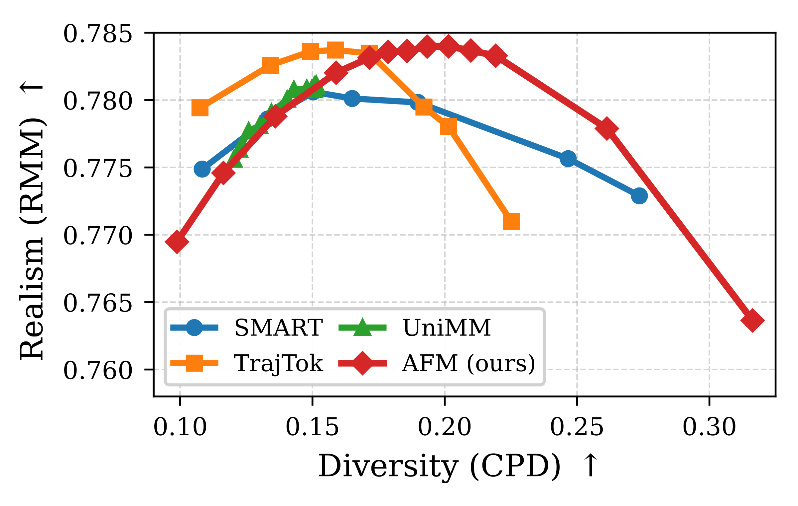
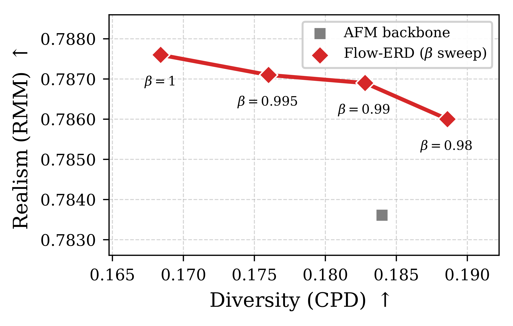
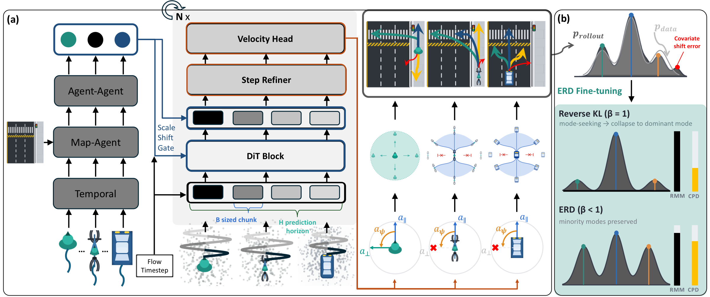

Crowded lot — creeping through pedestrians between parked cars.
Highways & complex layouts
Dense highway — smooth lane-keeping over a long segment.
Complex layout — irregular topology, no off-map drift.
04Diversity
Realism–diversity Pareto front · WOSAC 2025 validation split

Backbone: AFM (ours) traces the upper-right frontier — no baseline reaches it under any sampling setting.

Fine-tuned: ERD lifts realism far above the backbone; lowering β buys even more diversity at a tiny realism cost.
Type
Method
RMM ↑
Kinematic ↑
Interactive ↑
Map ↑
CPD (diversity) ↑
Pretrained
SMART
0.7807
0.4873
0.8071
0.9144
0.1655
TrajTok
0.7837
0.4851
0.8110
0.9193
0.1587
UniMM
0.7812
0.4863
0.8070
0.9165
0.1514
AFM backbone (ours)
0.7836
0.4914
0.8096
0.9172
0.1858
Fine-tuned
CAT-K (on SMART)
0.7842
0.4904
0.8110
0.9175
0.1491
RoaD
0.7847
0.4904
0.8116
0.9182
0.1585
RLFTSim
0.7848
0.4895
0.8116
0.9190
0.1510
DecompGAIL
0.7854
0.4912
0.8123
0.9190
0.1420
Flow-ERD (ours, β = 1.0)
0.7876
0.5063
0.8108
0.9184
0.1684
Flow-ERD (ours, β = 0.99)
0.7869
0.5053
0.8099
0.9182
0.1828
Highest diversity at the highest realism — every baseline trades one for the other.
05Model overview

(a) AFM generates continuous actions, executed through per-type kinematics.
(b) ERD distills the closed-loop distribution toward an entropy-tempered target that keeps minority modes alive.
06Two ingredients
AFM — Agent-Type Aware Flow Matching
Flow matching samples fine-grained continuous actions — no token codebook.
Type-specific kinematics (holonomic for pedestrians, bicycle-style for vehicles and cyclists)
make physically invalid motion impossible by construction.
ERD — Entropy-Regularized Distillation
Closed-loop fine-tuning with reverse-KL against an entropy-tempered target
pdataβ, β ≤ 1: covariate shift is corrected while
rare maneuvers — U-turns, unprotected lefts — survive instead of
collapsing into the dominant mode.
07Abstract
Realistic and diverse traffic simulation is essential to autonomous driving development. Yet
prevailing benchmarks predominantly reward realism, and recent methods have optimized accordingly,
leaving diversity underexplored. We introduce Flow-ERD, a multi-agent simulator that pursues realism
and diversity jointly. Its backbone, Agent-Type Aware Flow Matching (AFM), couples flow
matching’s multi-modal expressiveness with type-specific kinematic execution. It preserves
fine-grained diversity while keeping motions consistent with each agent type. A second stage,
Entropy-Regularized Distillation (ERD), fine-tunes the closed-loop rollout distribution with an
entropy-regularized reverse-KL objective. This mitigates covariate shift while explicitly preventing
collapse onto high-density modes. We evaluate Flow-ERD with a log-free diversity metric alongside
standard realism scores. Flow-ERD ranks first on the WOSAC test benchmark and dominates the
realism–diversity Pareto front among reproducible baselines.
08BibTeX
@misc{hwang2026flowerd,
title = {Flow-ERD: Agent-type Aware Flow Matching with Entropy-Regularized
Distillation for Diverse Traffic Simulation},
author = {Hwang, Seulbin and Om, Kiyoung and Kim, Daejung and Lee, Jinhan},
year = {2026},
note = {Preprint}
}